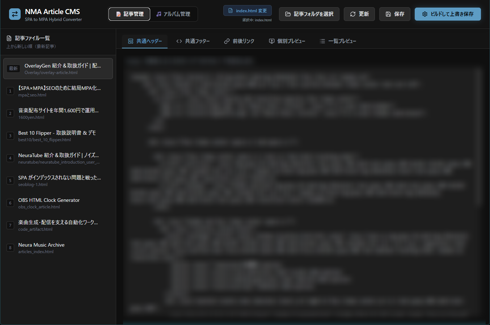

【AdSense審査落ち】いかにして挽回するか。
今日の朝、個人で運営している AI 生成 BGM 配布サイト「Neura Music Archive」に、Google AdSense から審査落ちの通知が届きました。
……と書いても、「AdSense って何？」という方もいるかもしれません。簡単に言うと、Web サイトに広告を掲載して収益を得る Google の広告配信サービスのことです。個人でコツコツとサイトを開発・運営している身としては、毎年かかるドメイン代くらいは回収して、できれば次の機材代の足しにもしたいという、ささやかな夢を託した「お小遣い稼ぎ」の手段でもあります。
しかし、今回届いた通知は「有用性の低いコンテンツ」や「ナビゲーションの問題」といった、血の通っていないいつもの定型文。原因は火を見るより明らかでした。
前回の記事でも触れた通り、当サイトは SPA（シングルページアプリケーション）で作っているため、Google のクローラーが中身をうまく読めず、Search Console のインデックス数は長らく「1（トップページのみ）」で止まっていました。
一生懸命モダンな技術で、画面がサクサク切り替わる快適なサイトを作ったのに、クローラーからは「中身が空っぽのサイト」と判定されて不合格。
これはもう、「先生にタブレットで綺麗にまとめた宿題を提出したら、『これじゃ採点できないから紙に書いてこい』と怒られた」ような理不尽さです。
「Google は JavaScript も評価する」という建前を信じた私が甘かった。
どうやら審査を通すには、彼ら（クローラー）の古い仕様に合わせて、純粋な静的 HTML（MPA）という名の“紙の束”を用意してやる必要があるようです。
一部だけ「紙」にしても許されず、結局 CMS を自作することに
実は前回の対策の時点で、少しでもクローラーの機嫌を取るために、内蔵している「Generatorツール類」だけは先行してMPA化（静的HTML化）を済ませていました。
しかし、今回のAdSense審査落ちで「ツールの一部だけじゃダメだ。記事も全ページ漏れなく紙（MPA）にして提出しろ」と突きつけられたわけです。
とはいえ、残りの全ページを手作業で HTML に書き直し、ヘッダーやフッターを一つ一つコピペして管理していくなんて絶対にやりたくありません。
「全部紙に書けと言うなら、自動で紙を大量印刷する機械を作ってやる」
そんな逆ギレに近いテンションで、SPA のデータを静的 HTML に一括変換するだけの“専用ローカル CMS”を今日急遽作ることにしました。
AdSense の審査に通すためだけに、本来必要なかった変換アプリを丸1日かけて作るという、本末転倒な展開です。
渋々作った「紙の束」量産システムの仕組み
1. 共通パーツの自動ガッチャンコ
ヘッダーやフッターを登録しておけば、記事ファイルを読み込んで上下に自動でくっつけてくれます。
2. クローラーを迷子にさせないナビゲーション
記事の並び順から「前の記事」「次の記事」を計算して差し込み。ついでに CSS だけで動くタイムライン風ナビも自動生成。
3. サイトマップの全自動化
ビルドボタンを押すだけで、トップページの最新記事リンクを更新し、SPA 側のデータと生成した HTML をまとめた sitemap.xml を一括出力します。

まとめ
朝に理不尽な審査落ちを食らってから半日。
これで、クローラー先生が大好きな「静的リンクで数珠つなぎになった HTML の束」が、ボタン1つで一瞬にして生成できるようになりました。
ユーザーにとっての使いやすさと、検索エンジン（や AdSense 審査）からの評価は、現状ではまったく別のルールです。
理不尽な審査落ちで休日を丸ごと溶かす羽目になりましたが、結果として今後の運用を楽にする“変換マシン”が手に入ったので、よしとします。
これでクローラーが迷子になることは物理的にあり得ません。
次こそは、クローラー先生に文句を言わせない「完璧な紙の宿題」を叩きつけてやろうと思います。